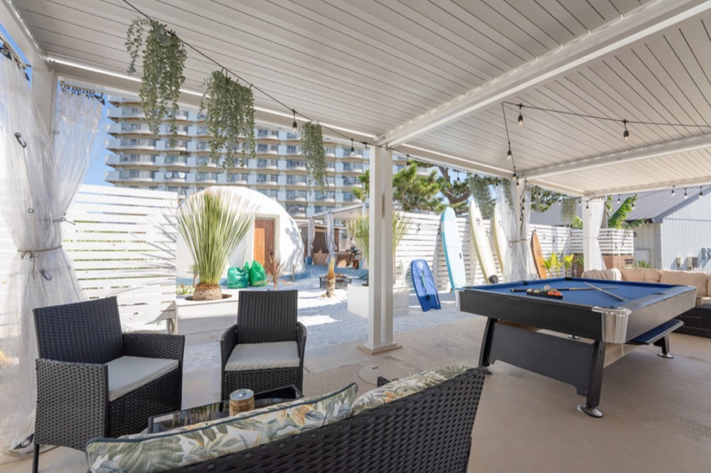
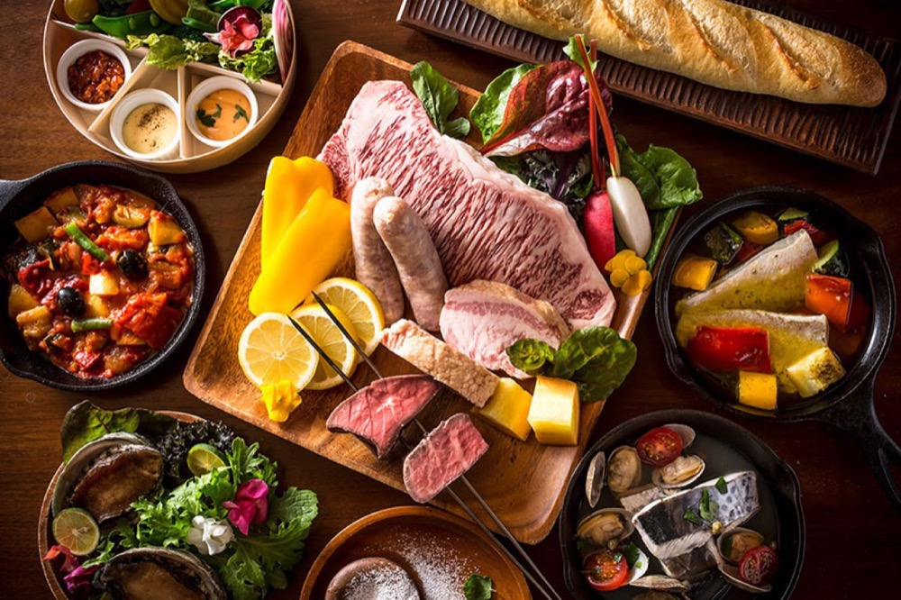
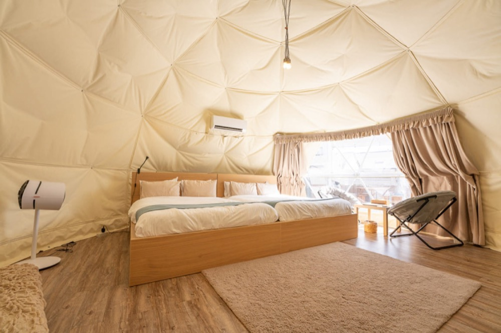
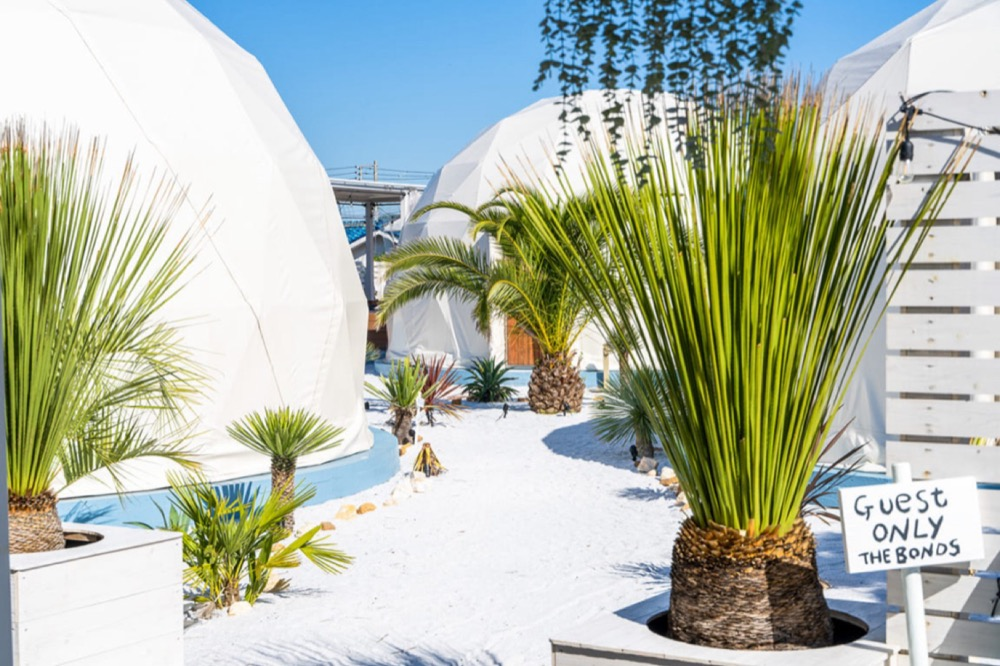

御宿にたたずむ日本初のグランピングエリア
生方 孝幸Takayuki Ubukata
THE BONDSビーチSPAリゾートグランピング千葉御宿 代表取締役
1999年、明治大学卒。マーケティングや飲食、出版社等様々な業種を経て、東京都港区の不動産総合ディベロッパー会社にてマンションやオフィス、ホテル等多数の開発を行う。2019年、ブランニューアセット株式会社代表取締役就任。2021年、THE BONDSリゾートグループとして「THE BONDSビーチSPAリゾートグランピング」開業。2022年「THE BONDSオーシャンプライベートヴィラ-千葉いすみ-」開業。2024年3月「THE BONDS SPA オーシャンプライベートヴィラ-千葉白浜-」開業予定。
企業サイトを見るTRACK 01
御宿にたたずむ日本初のグランピングエリア

千葉県夷隅郡御宿町。美しい海の景色・雄大な山の自然を同時に堪能でき、都会の生活に疲れた老若男女がゆったりとしたひとときを過ごすことができるリフレッシュスポットとして有名だ。
海に沿って立ち並ぶ大小様々なリゾート施設のなかで、ひときわ別世界の空間を醸し出しているグランピング施設がある。
「THE BONDS ビーチSPAリゾートグランピング 千葉御宿」。グランピングでは日本初となる雲海に浮かぶ4棟のドーム型テントと、オーシャンビューが一望できるTHE BONDSビーチハウスからなるアウトドアリゾート施設だ。グランピングではテントサウナやプライベートジャグジー、貸切温泉「御宿温泉」など充実した設備を楽しめるのはもちろん、御宿海水浴場から徒歩1分という好立地にあるため、サーフィンやフィッシングの拠点としても活用できる。
TRACK 02
育ててくれた地へ、恩返しがしたくて

生方氏は大学卒業後、さまざまな職業を経て都内の不動産総合ディベロッパー会社に就職。マンションやオフィス、ホテルといった大規模な不動産開発を多数手掛ける。その後THE BONDSリゾートグループの基となる不動産総合ディベロッパー会社、ブランニューアセット株式会社（Brand U Asset.inc）を千葉県に設立。これまでの実績を基にその土地、環境、自然に適したモノづくりを心がけながら、事業に取り組んでいる。
元々生まれも育ちも千葉県だという生方氏は、ずっと千葉に恩返しがしたいという気持ちを持っていたという。
「千葉は都心エリアにも近い上に他県にも負けないほどの綺麗な海、そして山の自然がたくさんあります。僕は特に生まれ育った千葉県の綺麗な海を感じることが好きでした。だから社会人として働き始めてから、育んでくれた千葉県へ恩返しができる仕事がしたいと思うようになってきたんですよね。


TRACK 03
どんなことにも「人」が関わっている
そして地域の農業や漁業者との連携や、ゴミ拾い等のクリーン活動など、一見事業とは大きく関係のない地域の活動にも生方氏は力を注いでいるという。
「もちろん千葉に恩返しをしたいからという気持ちもありますが、私はどんな事業、果てはどんなこともすべて「人」によって成り立っていると信じています。そう考えるとゴミ拾いだって、我々の事業に大きく関わっていると思いませんか。」生方氏はそう熱く語った。